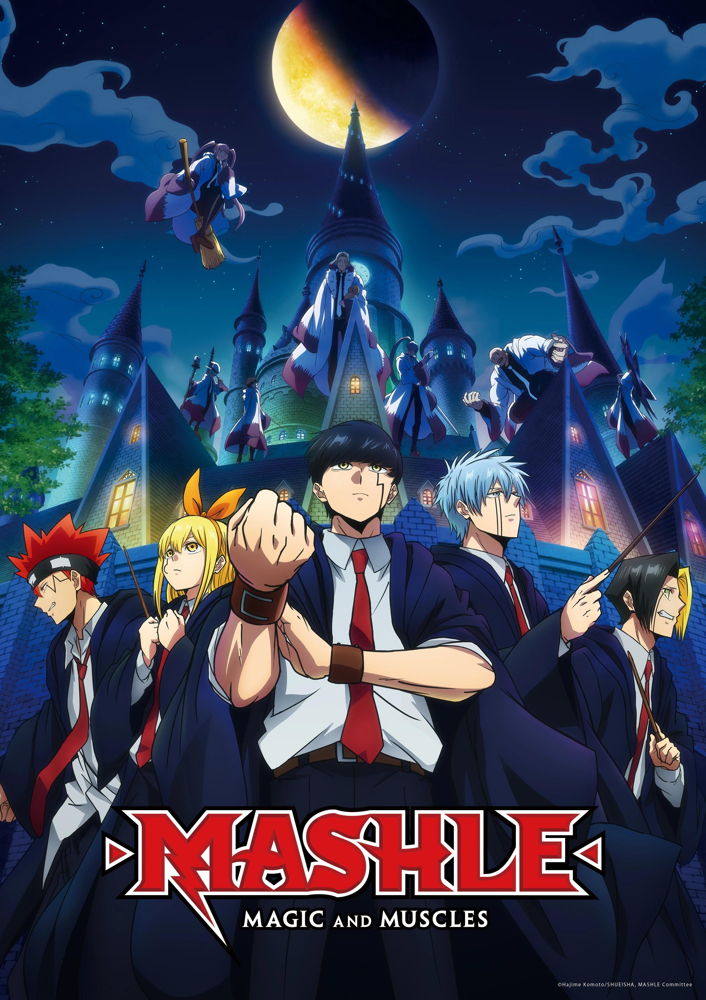
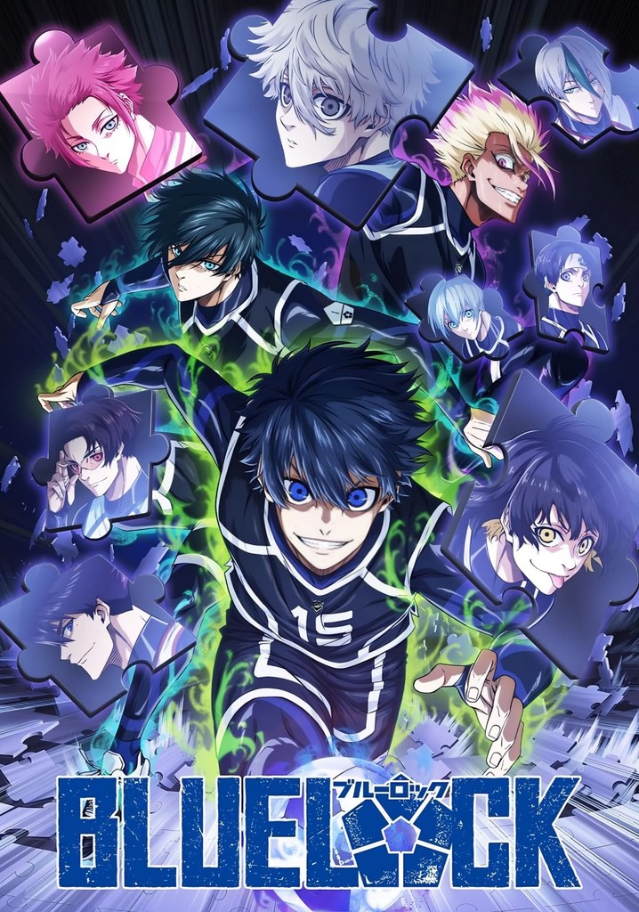
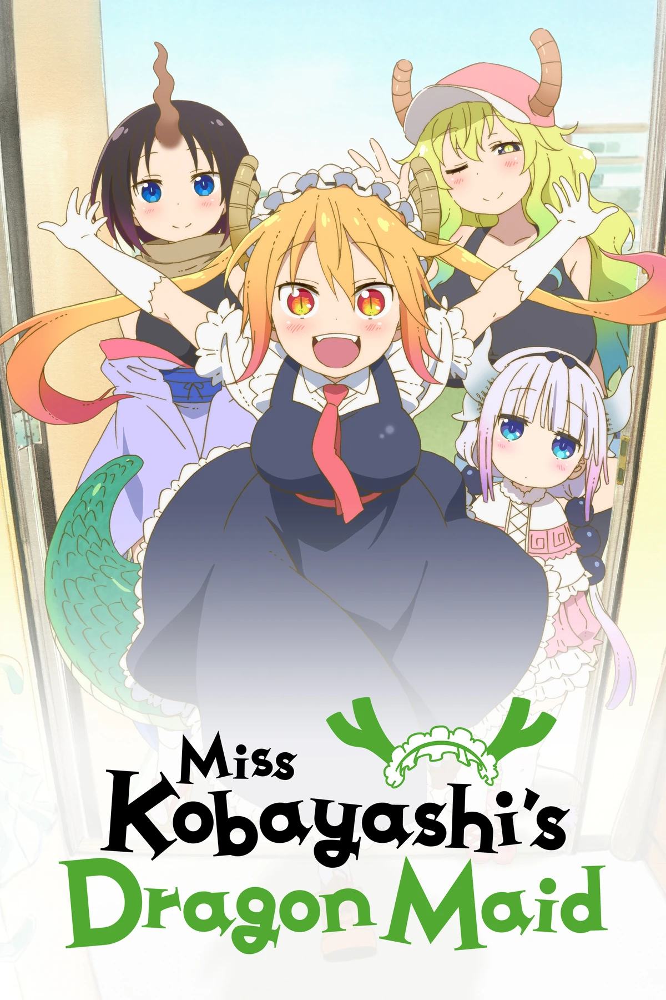
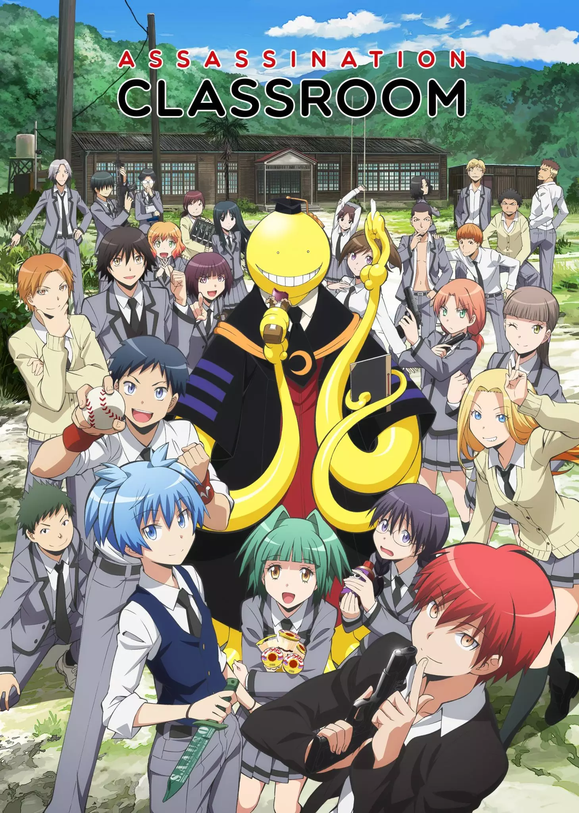
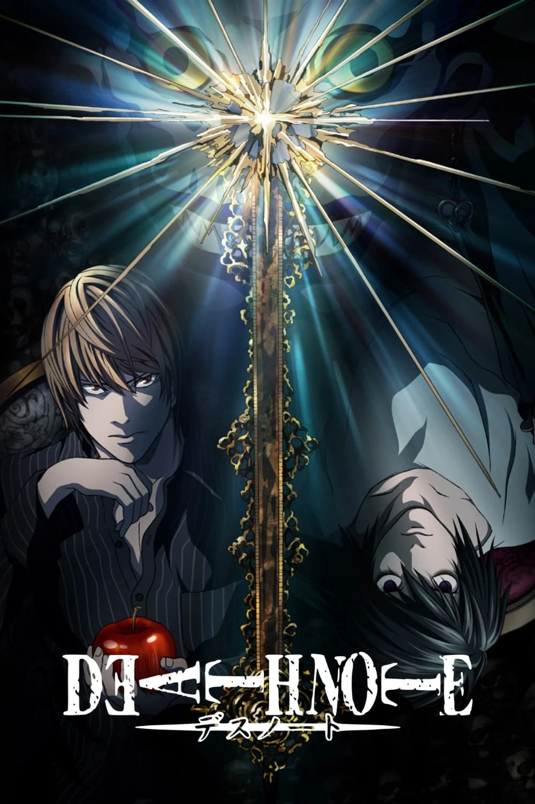
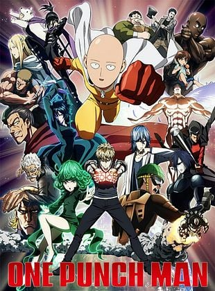
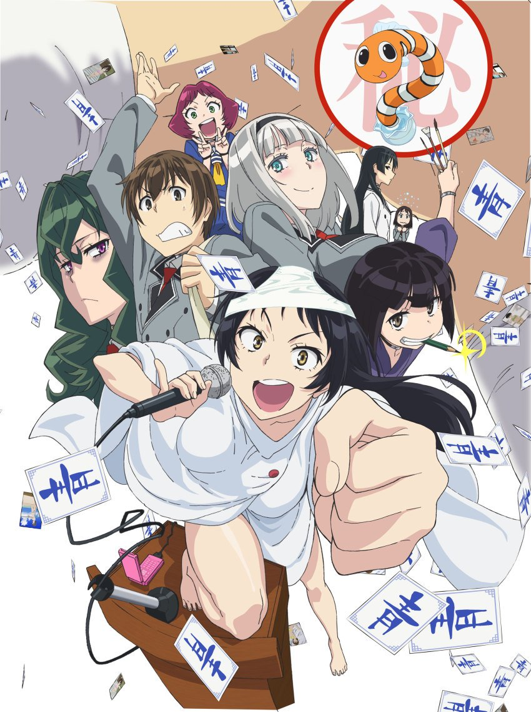
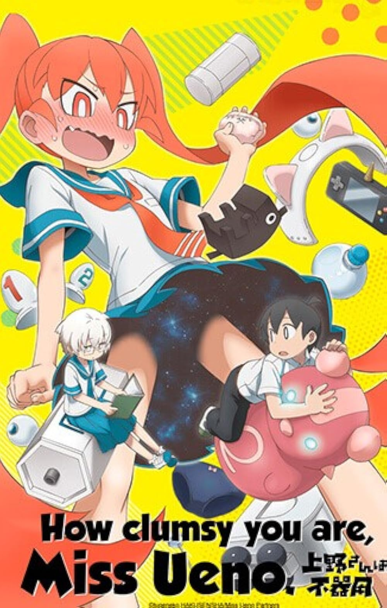
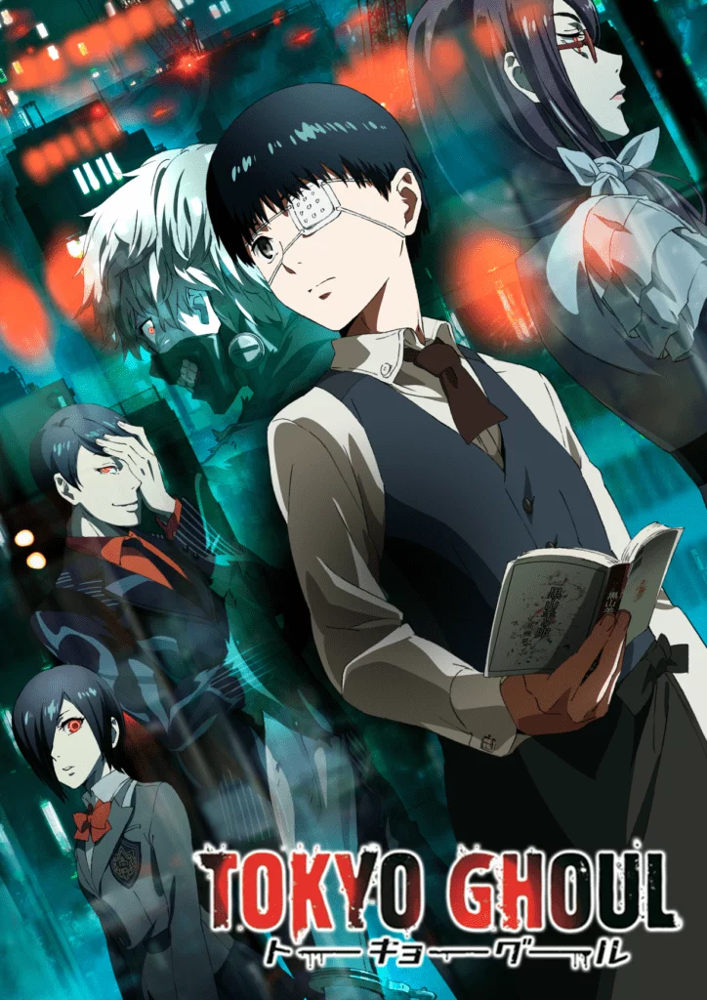

Top 10 mejores animes para ver este 2026
Esta página fue creada como una recomendación personal de animes que considero ideales para ver este 2026. No todos son los más famosos, pero cada uno ofrece algo especial y entretenido.
1. Dan Da Dan
Sinopsis:
Una historia que mezcla lo paranormal con lo absurdo, siguiendo a dos jóvenes que se enfrentan a espíritus y alienígenas en situaciones completamente inesperadas.
Reseña personal:
Es caótico, divertido y diferente. Ideal si quieres algo fuera de lo típico.

2. Mashle: Magic and Muscles
Sinopsis:
En un mundo donde la magia lo es todo, un chico sin poderes destaca usando únicamente su fuerza física extrema.
Reseña personal:
Una parodia muy entretenida con humor simple pero efectivo.

3. Blue Lock
Sinopsis:
Un proyecto radical reúne a jóvenes futbolistas para crear al delantero perfecto mediante competencia extrema.
Reseña personal:
Intenso y competitivo. Te mantiene enganchado todo el tiempo.

4. Miss Kobayashi's Dragon Maid
Sinopsis:
Una oficinista lleva una vida tranquila hasta que un dragón se convierte en su sirvienta y cambia todo su día a día.
Reseña personal:
Relajante y divertido, con momentos muy tiernos.

5. Assassination Classroom
Sinopsis:
Un grupo de estudiantes debe eliminar a su profesor antes de que destruya la Tierra, mientras él les enseña valiosas lecciones.
Reseña personal:
Divertido y emotivo. Tiene más profundidad de lo que parece.

6. Death Note
Sinopsis:
Un estudiante obtiene un cuaderno que le permite matar a cualquier persona cuyo nombre escriba en él.
Reseña personal:
Muy inteligente y lleno de tensión. Un clásico imprescindible.

7. One Punch Man
Sinopsis:
Un héroe tan fuerte que derrota a cualquier enemigo de un solo golpe busca emoción en su vida.
Reseña personal:
Acción y comedia en equilibrio perfecto. Muy entretenido.

8. Shimoneta: A Boring World Where the Concept of Dirty Jokes Doesn't Exist
Sinopsis:
En una sociedad donde todo contenido inapropiado está prohibido, un grupo lucha por la libertad de expresión.
Reseña personal:
Muy exagerado, pero divertido si te gusta el humor absurdo.

9. Ueno-san wa Bukiyou
Sinopsis:
Una genio científica intenta llamar la atención del chico que le gusta mediante inventos extraños.
Reseña personal:
Corto, raro y gracioso. Ideal para algo ligero.

10. Tokyo Ghoul
Sinopsis:
Un joven se convierte en mitad ghoul y debe adaptarse a un mundo oscuro donde humanos y monstruos conviven.
Reseña personal:
Oscuro e interesante, con una historia bastante intensa.

Recuerda: esta es solo mi opinión personal. Si no estás de acuerdo, te invito a crear tu propio top 😉